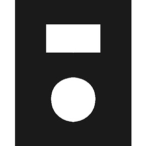

-
Протопилот Альфаᵝ
Подкаст о творчестве, продуктивности и проектах.
Делаю вместе с Санчои Лешей Увиным
-
 Проблемы Белых Идей
Проблемы Белых Идей
Формат встреч, в котором мы смотрим выступления с конференции TED и обсуждаем клучевые идеи. Делаю вместе с Санчо и Дашей Гиркиной
- Без названия.
Об абстракции от результатов творчества.
- Поток и скука
О способах стимуляции и подавления творчества.
- Мемесы и проблемесы
Об информационном окружении и влиянии на творчество.
- Не хочу, не буду!
О деньгах и мотивации к творчеству.
-
 Метабаза
Метабаза
Telegram-канал под искусственными ограничениями с мета-размышлениями.
-
БОРЯ
YouTube-канал по пути наименьшего сопротивления.
-
 MRTNSN-keyboard-layout
MRTNSN-keyboard-layout
Две клавиатурные раскладки для RU/EN ввода. Результат изысканий на соответствующую тему. Создана на основе полноценно оптимизированной раскладки QGMLWB.